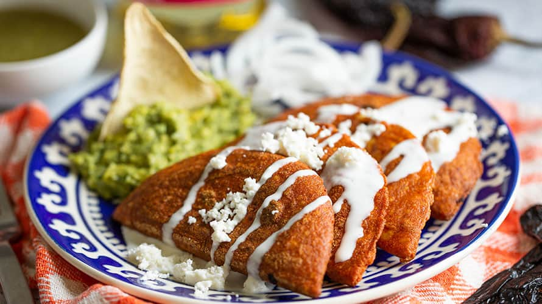
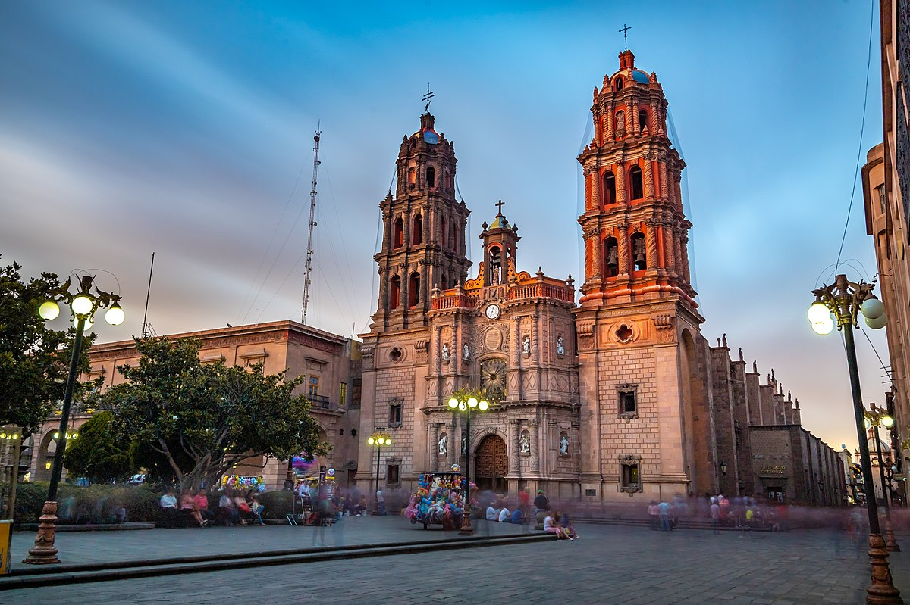

Las enchiladas potosinas se distinguen por estar rellenas de queso fresco y acompañadas de una salsa roja picante. Lo que las hace únicas es que se fríen brevemente después de ser rellenadas y antes de ser bañadas en la salsa. Este paso adicional le da a las enchiladas una textura crujiente por fuera y suave por dentro, lo que las hace irresistibles.

Uno de los aspectos más destacados del Centro Histórico es su impresionante arquitectura colonial, que incluye magníficas iglesias, como la Catedral Metropolitana y el Templo de San Francisco, así como elegantes mansiones y plazas históricas.

Notas relevantes:
San Luis Potosí ha
sido llamada la "Ciudad de las Siete Coronas"
debido a las siete colinas que rodean el centro
histórico de la ciudad.
Leyendas mineras:
La región de San Luis Potosí
está llena de leyendas mineras. Una de las más
famosas es la leyenda de "La Mulata de Córdoba",
que cuenta la historia de una mujer que
supuestamente hizo un pacto con el diablo para
encontrar una mina de plata.
Huasteca Potosina: La Huasteca Potosina es una
región en el noreste de San Luis Potosí conocida
por sus paisajes naturales impresionantes, que
incluyen cascadas, ríos subterráneos y cuevas. Es
un destino popular para actividades al aire libre
como el ecoturismo y el rafting.